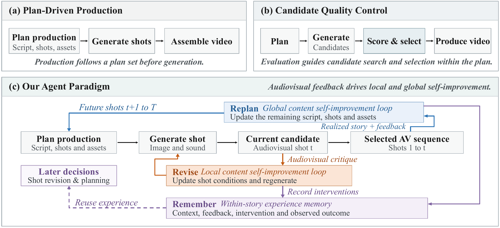
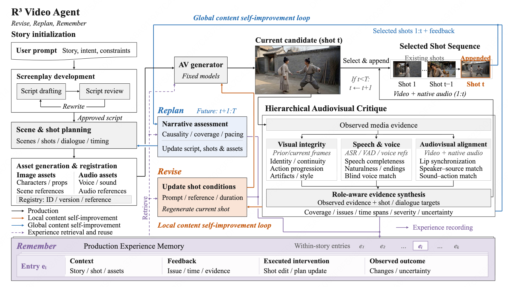

Revise
Check the current candidate's visuals, dialogue, and audiovisual alignment. Adjust prompts, references, or duration before generating a new take.

(a) Plan-driven production follows a plan set before generation.
(b) Candidate quality control uses evaluation to guide selection within that plan.
(c) R3 Video Agent uses audiovisual feedback to revise the current shot and replan the remaining story, while reusing production experience to guide later decisions.
THE METHOD
R³ uses evidence from generated audio and video to guide production shot by shot with fixed generation models.
Check the current candidate's visuals, dialogue, and audiovisual alignment. Adjust prompts, references, or duration before generating a new take.
Review causality, coverage, and pacing in the committed sequence. Update the plan and its reference requirements for shots still to come.
Record issues, interventions, and observations. Retrieve relevant experience for later decisions within the same story.

The Screening Room
Watch the full films and explore the image and audio references used in production.
93.69vs. 84.25
+9.44 points over the strongest baseline
92.84vs. 83.41
+9.43 points over the strongest baseline
93.53vs. 85.59
+7.94 points over the strongest baseline
93.91vs. 86.56
+7.35 points over the strongest baseline